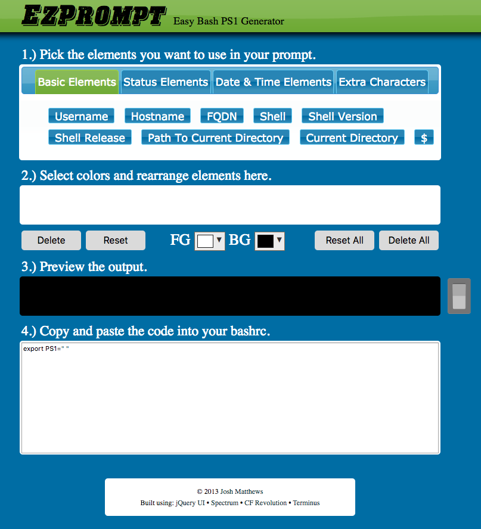

You should customize your shell according to your needs!
bashrc and bash_profilebashrc: Executed for non-login shells bash_profile: Executed once when starting shellBut most of the settings go in bashrc file!
In Mac OSX, both files exist. In Linux, only one is used!
bashrc and bash_profileA typical bashrc file looks like this:
https://gist.github.com/giggio/1704664
# ~/.bashrc: executed by bash(1) for non-login shells.
# see /usr/share/doc/bash/examples/startup-files (in the package bash-doc)
# for examples
# If not running interactively, don't do anything
case $- in
*i*) ;;
*) return;;
esac
# don't put duplicate lines or lines starting with space in the history.
# See bash(1) for more options
HISTCONTROL=ignoreboth
# append to the history file, don't overwrite it
shopt -s histappend
# for setting history length see HISTSIZE and HISTFILESIZE in bash(1)
HISTSIZE=1000
HISTFILESIZE=2000
# check the window size after each command and, if necessary,
# update the values of LINES and COLUMNS.
shopt -s checkwinsize
# If set, the pattern "**" used in a pathname expansion context will
# match all files and zero or more directories and subdirectories.
#shopt -s globstar
# make less more friendly for non-text input files, see lesspipe(1)
[ -x /usr/bin/lesspipe ] && eval "$(SHELL=/bin/sh lesspipe)"
# set variable identifying the chroot you work in (used in the prompt below)
if [ -z "${debian_chroot:-}" ] && [ -r /etc/debian_chroot ]; then
debian_chroot=$(cat /etc/debian_chroot)
fi
# set a fancy prompt (non-color, unless we know we "want" color)
case "$TERM" in
xterm-color) color_prompt=yes;;
esac
# uncomment for a colored prompt, if the terminal has the capability; turned
# off by default to not distract the user: the focus in a terminal window
# should be on the output of commands, not on the prompt
#force_color_prompt=yes
if [ -n "$force_color_prompt" ]; then
if [ -x /usr/bin/tput ] && tput setaf 1 >&/dev/null; then
# We have color support; assume it's compliant with Ecma-48
# (ISO/IEC-6429). (Lack of such support is extremely rare, and such
# a case would tend to support setf rather than setaf.)
color_prompt=yes
else
color_prompt=
fi
fi
SHELL sessionvim ~/.bashrc.
(If it doesn't exist, create it with touch.)
parse_git_branch() {
git branch 2> /dev/null | sed -e '/^[^*]/d' -e 's/* \(.*\)/ (\1)/'
}
export PS1="\[\033[36m\]\u\[\033[m\]@\[\033[32m\]\h:\[\033[33;1m\]\w\[\033[m\]\$(parse_git_branch)\[\033[00m\] "
export CLICOLOR=1
export LSCOLORS=ExFxBxDxCxegedabagacad
alias ls='ls -GFh'
parse_git_branch() {
git branch 2> /dev/null | sed -e '/^[^*]/d' -e 's/* \(.*\)/ (\1)/'
}
username@hostname:cwd $(git-branch)
export PS1="\[\033[36m\]\u\[\033[m\]@\[\033[32m\]\h:\[\033[33;1m\]\w\[\033[m\]\$(parse_git_branch)\[\033[00m\] "
'ls' command
export CLICOLOR=1
export LSCOLORS=ExFxBxDxCxegedabagacad
-G: Colorizes output-h: Makes sizes human readable-F: Throws a '/' after a directory, '*' after an executable,
and a '@' after a symlink
alias ls='ls -GFh'
You can also modify the aspect of
your command prompt
username@hostname:/path/to/working/directory (git-status)
You can add this to bashrc file!
Under data >> day_03 >> dot_files
These are a set of sample dot files that you can add to your main directory.
Or you can use http://ezprompt.net/ to also customize your prompt:
I like to save my aliases in ~/.aliases
############################## --- GENERAL --- ################################
alias lll='ls -lah'
alias LLL=lll
alias lla=lll
alias llh='ls -lh'
alias llt='ls -lahtr'
alias LS='ls'
alias sl='ls'
... and many more
If you want a temporary alias, type
alias name_of_alias="command"
For example:
alias ll="ls -al"
Now whenever you type ll, the system will understand it as ls -la
If you want a permanent alias, you need to modify your ~/.bashrc file
## Example of other aliases
alias pushd='cd -'
alias CD='cd'
alias tree='tree -C'
alias crone='crontab -e'
alias cronl='crontab -l'
alias jb='jupyter notebook'
This file is a compilation of useful aliases for your terminal!
(See the repository)
If you want to remove an alias, type:
unalias command_name
This will remove the alias from the current session!
For example:
# This will remove the 'crone' alias
unalias crone
If you want remove a permanent alias, you will need to edit your ~/.aliases file!
Whenever you modify your ~/.aliases file, you need to source it again:
source ~/.aliases
This will update the aliases in your current session
ping www.google.com".aliases file from the repository to your local versionmaster" branch.aliases file to your .aliases file in $HOME directory.For more info on aliases and how to use them,
see:
Typically, environment variables look like:
KEY="value with spaces"
or
KEY=value1:value2:...
Creating a shell variable named TEST_VAR
TEST_VAR='Hello World!'
And you can access it by:
echo $TEST_VAR
Now you need to export the variable
export TEST_VAR
This will ensure that your variable TEST_VAR
is available!
You can set environment variables in your current shell, or you can make them permanent
You can do this adding them to your ~/.bashrc file
## .bashrc file
...
# Defining environment variable TEST_VAR
TEST_VAR='Hello World!'
export TEST_VAR
...
and type this in the terminal
source ~/.bashrc
This will source the new environment variables!
For more information on environment variables,
see:
You learned how to
~/.bashrc filealiasesNow you can add/modify your environment. You can use the dot files found at:
(Note: Make sure you're in the master branch!)
Back to main website: